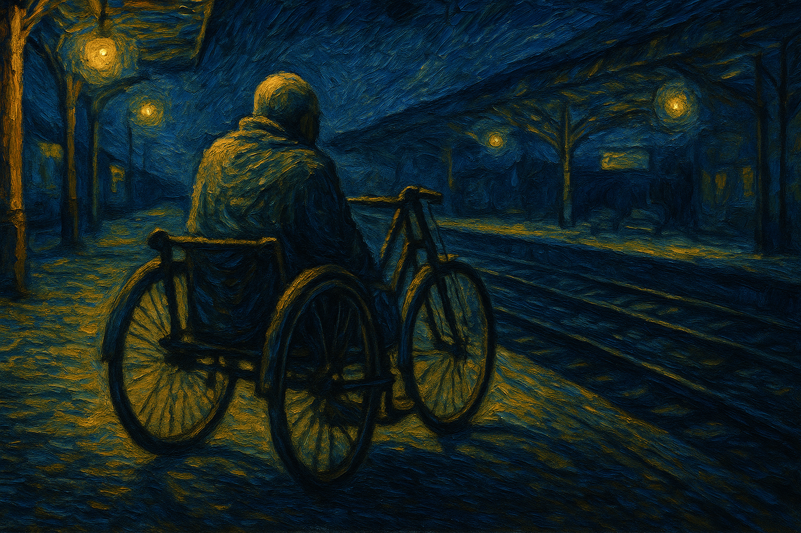

It was exactly one month ago (22nd June.) I’d just come from celebrating my dear friend’s birthday - photos, laughter, a surprise chocolate truffle cake, and that off-key chorus of “Happy Birthday” I sang anyway :) My heart was light. Music from the Instagram stories still played in my head.
While I was returning to home by Local train, I noticed a person. He was seated on a handheld cycle, the kind that you push with your arms. No legs. Just a wire frame, darkened skin, and an old yellow towel tied to his handlebars like a flag. His arms were strong - built not from gym routines but from daily life.
He looked up for a moment: I saw him.
He didn’t ask for help, but he didn’t need to. The train stopped at Urapakkam station, and people had begun to pour out - rushing, distracted, lost in their own universes. But he waited, calm and composed, as if it was a ritual he’d done a thousand times.
And then four of us - strangers until that moment - stepped toward him. No words exchanged. Just hands moving in sync. Two lifted the front, two at the back. We hoisted the cycle. As he held on, I saw the quiet trust in his eyes - the kind that can only be formed through countless similar moments. Every bump, every small tilt of the cycle made him jerk slightly, but he stayed steady.
The platform was uneven. Cracks, bumps, and patterns. Still, we got him down. One of us - an old uncle with a striped towel around his neck - said, “Paathu pa saikama pudichuko”(Careful..,hold on steady). The man just nodded, offered a soft “Nandri Naa”.
That could’ve been the end. But it wasn’t. He still had to cross to the next platform.
There was no railway crossing nearby, and the overhead bridge? Not an option. So again, we carried him. Down the Platform, across the tracks, up again. The iron rails were hot from the day’s sun, and somewhere nearby, someone was selling Mallipoo (jasmine), their aroma sharp and moist in the air. But in that moment, all I could focus on was the way his hands never stopped gripping the handlebars.
He told me, in bits and pieces, that he comes and goes like this every day. From Koyembedu market, where he sells small items - fruits, vegetables, sometimes plastic goods - and returns to Urapakkam at night. His earnings? About 500 rupees on a good day. “Enakku adhu podhum pa,”(this is enough for me) he said, almost cheerfully.
There was no self-pity. No grand speech about hardship. Just this… steady grit. His life moved forward, every day, powered by his own arms and the kindness of whoever happened to be there.
And here I was, coming back from a day of joy. A celebration filled with food, selfies, cake smudged on nose, and soft hugs. I felt… small. Humbled. Maybe even a little guilty. Because while I had celebrated love, this man had celebrated survival. And not once with complaint.
I thought of my own daily complaints - WIfi, Phone battery, commitments. They seemed ridiculous. Sometimes, life sends you moments that aren’t loud or dramatic. Just a quiet encounter that might crack something open inside you.
As the train pulled away behind us, I watched him push his cycle forward. That yellow towel fluttered in the breeze. He didn’t look back.
And me? I stood there, the laughter of the birthday party still faint in my memory, but now mixed with the sound of steel wheels and a faint inner voice that made me write this phrase - “Kindness is a platform we all share. Step onto it, whenever you can.”
Thank you for reading